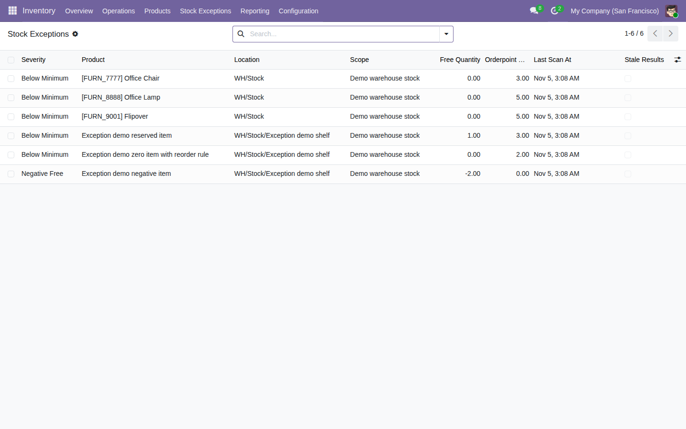

Review negative free stock, quantities below reorder minimums, and zero availability observed across scans.
Free, open-source Odoo 19 addon (LGPL-3). Requires the standard stock module.
Open Inventory → Stock Exceptions → Scan Scopes and scan the selected warehouse scope.

Tested on Odoo 19 Community, including installation from the public ZIP. Results are advisory. Enterprise compatibility, large-shop performance and interactive site accessibility remain unverified.